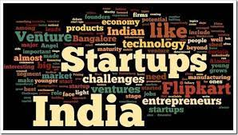
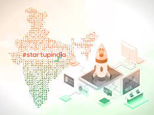

Startup Companies in India
Future Of India
Indian startups have been at the forefront of innovation across multiple sectors,including healthcare,educatoion,ecommerce and financial technology.
startups scale up quicly meaning more jobs are created across all work levels.



One of the Best Startups in India are :
1. Flipkart
2. PhonePe
3. Rapido
4. Bookmyshow
5. Zepto
Small companies like startups are crucial to economic expansion. This is because they create jobs, which leads to lower unemployment rates, which in turn signifies a more developed and better-functioning economy.
They focus on their customers. Successful startups know that their customers are their most important asset. They focus on building strong relationships with their customers and always put their needs first.